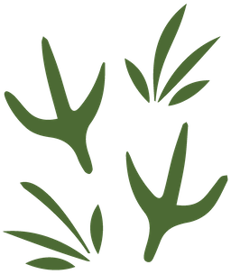
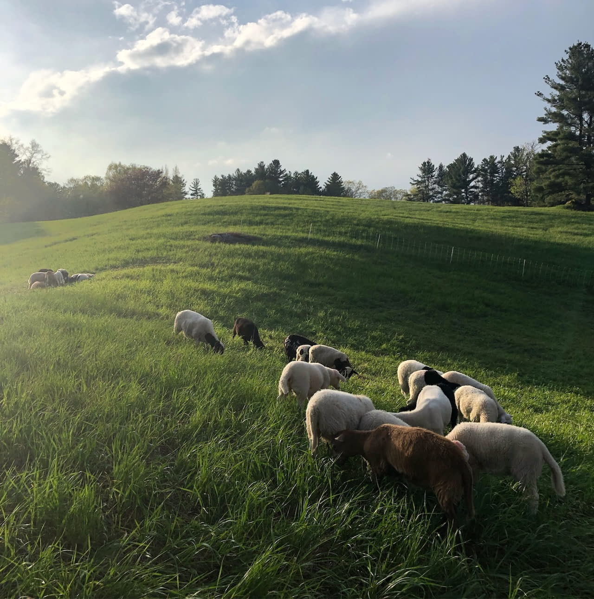
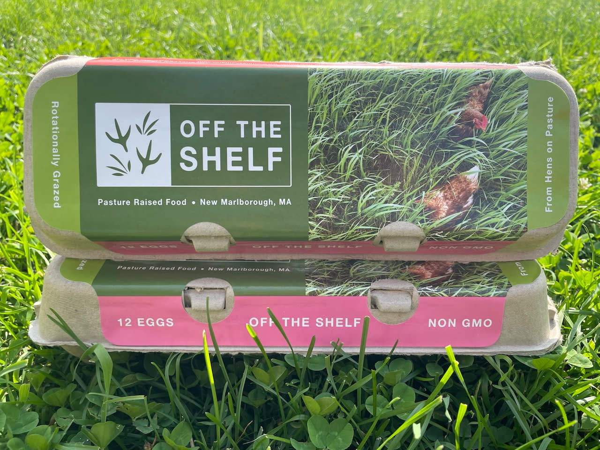

Lamb Boxes Now Available! Sign up here
Off the Shelf is a pasture-based farm, where flocks of chickens and sheep rotate through the hilly pastures of New Marlborough, MA.
Our hens and chickens are pastured-raised, and our lambs 100% grassfed - which means they are always moving to fresh grass throughout our fields. By using rotational grazing practices, we are building soil health while spreading manure, restoring forest edges and mitigating invasive species, and ensuring that our animals are receiving the highest quality forage and quality of life. Our goal is to work in balance with the land; a relationship giving and taking.
And our #1 priority is always the welfare of the animals we care for. We hope you'll notice the difference in the quality of the eggs and lamb you purchase!
You can find our certified Non-GMO eggs for sale at many shops around Great Barrington, MA. You can also come see us at the Great Barrington Farmers' Market, which runs May-October in downtown Great Barrington. Alongside our eggs by the dozen, we sell cuts of our 100% grassfed lamb, our pasture-raised non GMO chicken, and our famous, made-to-order Egg Sandwiches.
If you want to stay up to date on the latest farm news, subscribe to our not-so-frequent newsletter below.
Sign Up"Movement, movement, movement"
What sets us apart